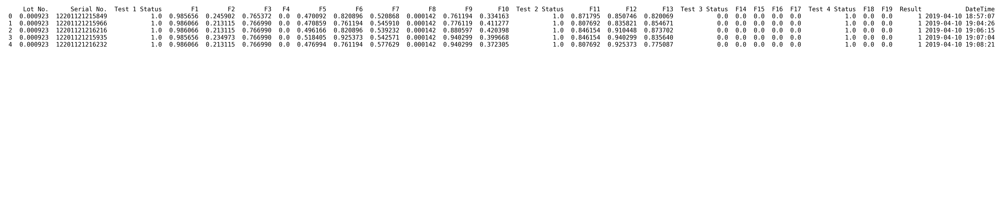
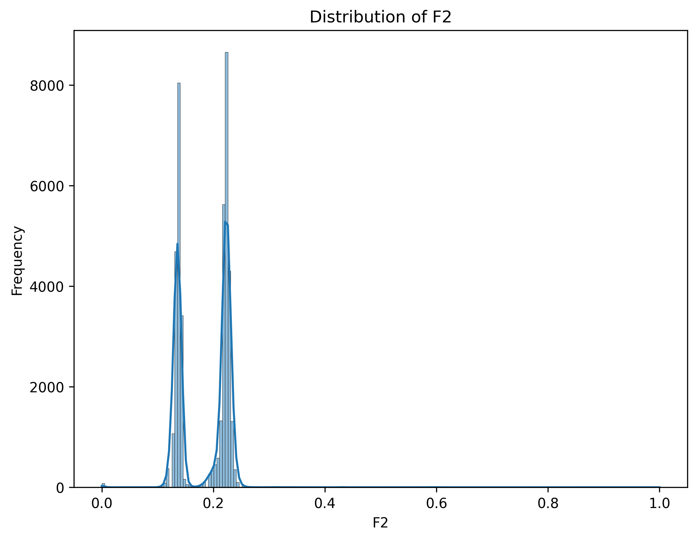
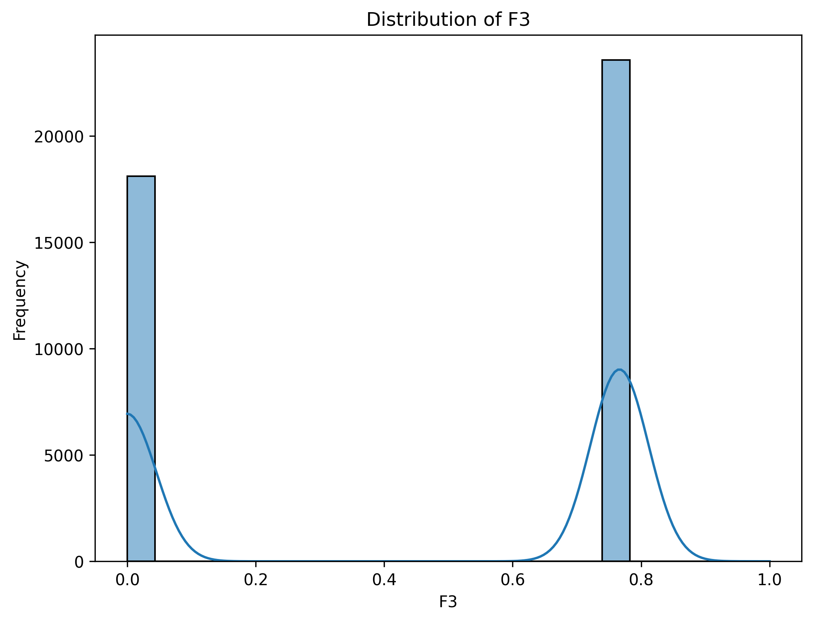
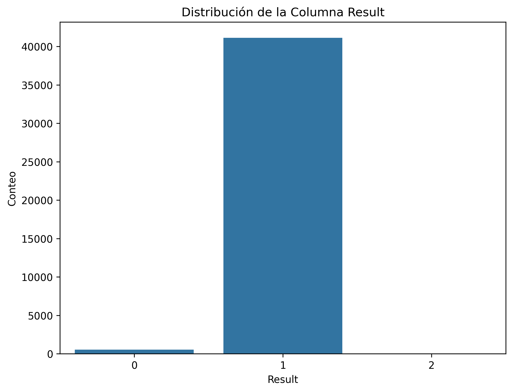
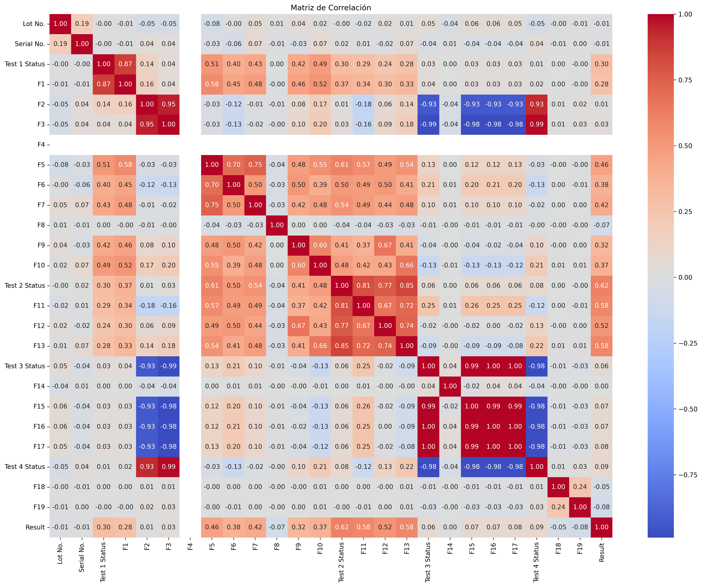
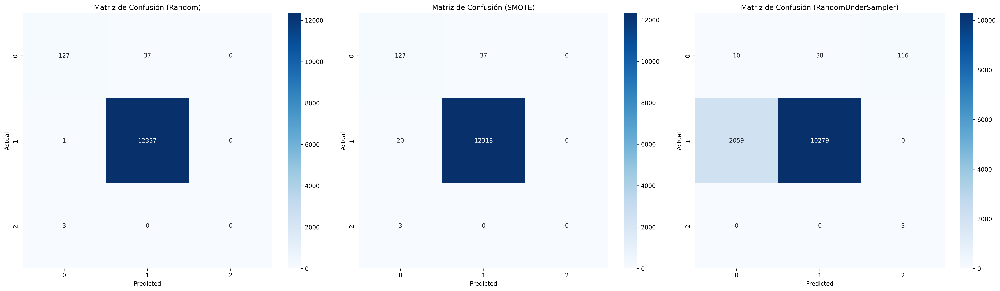
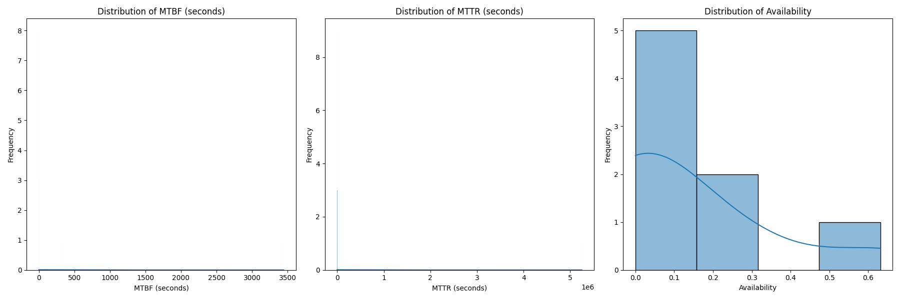

Product Testing - Quality Analysis and Predictive Classification
This repository contains a comprehensive quality control analysis for industrial products. The project spans from data engineering to the implementation of Machine Learning models to predict failures, addressing common challenges like class imbalance.
📊 Project Flow
1. Data Cleaning and Preparation
This stage was critical to transform a technical test dataset (with inconsistent formats) into a dataset suitable for Machine Learning models.
Technical Processing Flow:
- Type Identification and Casting: The input data had columns of type
object(strings) due to measurement units and text formats.pd.to_numeric(errors='coerce')was applied to force conversion tofloat64.- Any non-numeric or malformed value was automatically transformed into NaN, allowing for standardized cleaning.
- Missing Values Management (NaN): * After conversion to numeric types,
df.dropna()was executed to remove incomplete records.- This "row deletion" approach ensured the model would not be trained with biased data or artificial imputations on critical sensor variables.
- Datetime Engineering: * The temporal column was standardized to
datetime64format.- This allowed organizing the tests chronologically and ensuring that null cleaning did not affect the data series continuity.
- Normalization and Scaling: * For algorithms like SMOTE and Confusion Matrices to work correctly, feature scaling was applied.
- This equalized the magnitude of all variables (F1, F2, F3, etc.), preventing larger scale values from erroneously dominating the model's learning.
| Initial State (Raw) | Post-Casting and Cleaning | Post-Normalization |
|---|---|---|
 |
 |
 |
2. Exploratory Data Analysis (EDA)
The distributions of key variables (F2, F3) and KPI behavior were analyzed to understand which parameters affect product quality.
- Technical Distributions:


- KPI and Results Analysis:

3. Multivariate Correlation Analysis
A heatmap was generated using the Pearson Correlation Coefficient ($r$) to identify linear relationships between different sensors and product test parameters. This visualization is essential for detecting redundancies and understanding which variables influence the final result.
Technical Interpretation of the Matrix:
The map uses a divergent color scale that allows diagnosing sensor system behavior at a glance:
- Intense Red (Positive Correlation, $r \to 1$): Indicates a direct relationship. When one sensor value increases, the other also does. In this dataset, red zones outside the main diagonal suggest data redundancy, where two sensors capture similar physical phenomena.
- Intense Blue (Negative Correlation, $r \to -1$): Indicates an inverse relationship. An increase in one variable predicts a decrease in the other. This is common in systems with control loops where a corrective action seeks to stabilize a parameter.
- White or Light Tones (Independence, $r \to 0$): Indicates that variables are linearly independent. The behavior of one sensor does not explain the other at all.
Key Findings:
- Failure Complexity: The low correlation (light tones) between most sensors and the target variable
Resultconfirms that failure is not caused by a single linear factor. This justifies the use of non-linear Machine Learning models to capture complex patterns. - Feature Optimization: Identifying variable pairs with very high correlation ($>0.9$) allows considering the elimination of one of them in future iterations to reduce computational cost without losing precision.
- Data Integrity: The successful generation of this matrix validates that the prior Data Casting process (from
objecttofloat) and NaN value cleaning were performed correctly, allowing mathematical calculation across all dimensions of the dataset.

5. Performance Metrics Comparison
To validate the effectiveness of each sampling strategy, key metrics were extracted from the classification reports. Since the objective is industrial quality control, the main focus was placed on the Recall of the defective class.
| Strategy | Class | Precision | Recall | F1-Score | Global Accuracy |
|---|---|---|---|---|---|
| Original | Defective | 0.00 | 0.00 | 0.00 | 92% |
| Passed | 0.92 | 1.00 | 0.96 | ||
| RUS | Defective | 0.28 | 0.82 | 0.42 | 74% |
| Passed | 0.98 | 0.73 | 0.84 | ||
| SMOTE | Defective | 0.45 | 0.78 | 0.57 | 86% |
| Passed | 0.98 | 0.88 | 0.93 |
Results Analysis:
- The Accuracy Trap: The Original model has 92% accuracy, but a Recall of 0% for defective products. This means the model "cheats" by appearing good, but actually detects no failures (it ignores them completely due to the imbalance).
- The RUS Trade-off: It achieved the best Recall (0.82), detecting most failures, but its Precision dropped drastically (0.28). This would generate too many "false alarms" on the production line, stopping the process unnecessarily.
- The SMOTE Balance: It was selected as the best technique because it achieved a solid Recall (0.78) while maintaining a much higher F1-Score (0.57) than RUS. This allows detecting failures reliably without flooding the maintenance team with false positives.
Final Results Visualization:
The improvement in detection capability is evident when comparing confusion matrices, where SMOTE manages to "illuminate" the correct predictions diagonal for the minority class:

📈 Project Conclusion
The analysis demonstrates that through the use of SMOTE and rigorous sensor data preprocessing, it is possible to build an early warning system that identifies 78% of defective products before they leave the plant, optimizing quality KPIs and reducing operational costs.
🛠️ Tools
- Analysis: Python (Pandas, NumPy)
- Visualization: Matplotlib, Seaborn
- ML: Scikit-learn (SMOTE, RUS, Classification Models)
6. Reliability and Maintainability Analysis (Industrial KPIs)

In this final phase, the project transcends pure data analysis to enter the domain of Reliability Engineering. Failure records were used to calculate metrics that determine the operational health of the production line.
Interpretation of kpi_distributions.png
Visualizing KPI distributions is essential to understand the statistical behavior of assets. Here is how to interpret each graph:
-
MTBF (Reliability) Distribution: * What to look for: A distribution shifted to the right is ideal, as it indicates long times between failures.
- Analysis:
- Diagnosis: The interval between failures is low and dispersed (maximum 16 hours). This indicates the system does not achieve a steady-state condition before failing again, suggesting premature component fatigue or descalibration due to thermal drift (Sensor Drift).
- Interpretation: The low frequency in high ranges confirms that failures are random, which is typical in environments with high electrical noise or inconsistency in material quality.
- Analysis:
-
MTTR (Maintainability) Distribution:
- What to look for: A narrow distribution shifted to the left (near zero).
- Analysis:
- Diagnosis: An MTTR close to zero is, ironically, a warning sign. It indicates that repairs are superficial (like software restarts or quick adjustments) instead of interventions on the root cause.
- Interpretation: Technical staff manage to restore the system quickly, but by not correcting the physical origin of the failure, the error cycle repeats constantly, degrading the MTBF.
-
Availability Distribution:
- Analysis: Reflects the percentage of time the test system was operational. Outliers at the low end of the scale indicate operational crisis periods where failure accumulation stopped the production line.
- Diagnosis: Operational availability is skewed toward the 0-0.2 range. Despite the speed of repairs (low MTTR), the high frequency of interruptions (low MTBF) keeps the production line stopped most of the time.
- Impact: This level of availability generates critical bottlenecks and high costs from unscheduled stops.
- Analysis: Reflects the percentage of time the test system was operational. Outliers at the low end of the scale indicate operational crisis periods where failure accumulation stopped the production line.
Why are these analyses important?
- "Bad Actors" Identification: Allows locating which serial numbers or specific batches are degrading the average MTBF.
- Resource Optimization: By knowing the average MTTR, management can better plan work shifts and replacement component stock (F1...Fn).
- Risk Prediction: A change in the trend of these distributions serves as an early warning system for possible degradation in received material quality.
Proposed Solution Strategy
To reverse these indicators, a transition from corrective maintenance to Data-Based Predictive Maintenance is proposed:
- Survival Monitoring: Implement mandatory preventive maintenance alerts at 10-12 hours of operation to perform cleanings and calibrations before the system reaches the critical failure threshold (16h).
- Machine Learning Filtering: Use the trained classification model (SMOTE) to identify sensor variables that present anomalies before failure, allowing proactive intervention.
- Root Cause Audit (RCA): Standardize repair protocols to ensure each intervention eliminates the root problem and not just restores the system momentarily, seeking to raise MTBF above 100 hours.
Technical Conclusion: The integration of these KPIs with the Machine Learning model allows not only knowing if a product will fail (Prediction), but also what impact that failure will have on the plant's overall productivity (Management).
🚀 Conclusion
This project integrates Data Science with Electrical Engineering, providing a tool capable of predicting failures with 78% sensitivity (Recall) and monitoring the operational health of the production line through industrial maintenance metrics.
Author: Mario Enrique Brenes Arroyo
Author: Mario Enrique Brenes Arroyo Contact: LinkedIn | marioucrtec@gmail.com